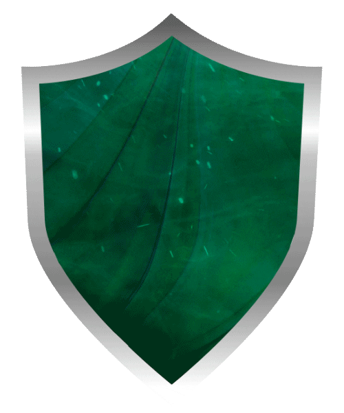

Slytherin
- Slytherins are known for being cunning and ambitious. They always strive to be the best. However, Slytherins will never leave their own behind. The animal of the house is a snake and its colors are green and silver.
- Salazar Slytherin was the founder of Slytherin house. He is known for favoring Pure-Bloods as well as being a Parselmouth (people with the ability to talk to snakes)
- "Or perhaps in Slytherin, you'll make your real friends, those cunning folk use any means, to achieve their ends."
Noteworthy Witches & Wizards
